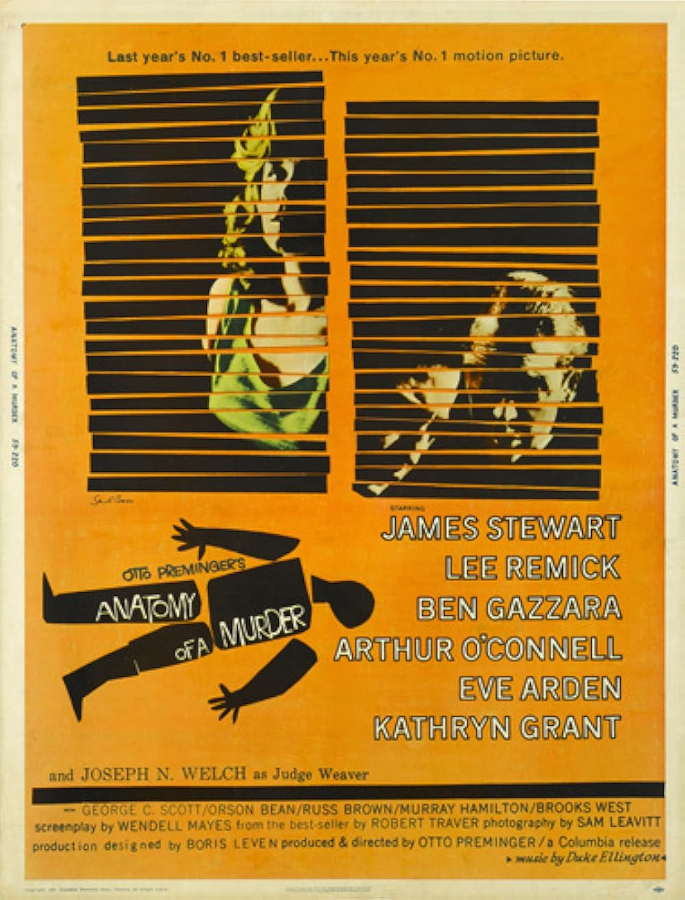

Anatomy of a Murder
32nd Academy Awards
(Oscars 1960)
7 Nominations, 0 Awards
| Nominations | ||
|---|---|---|
| Category | Nominees | Result |
| Best Motion Picture | Otto Preminger | Nominated |
| Actor | James Stewart | Nominated |
| Actor in a Supporting Role | Arthur O'Connell | Nominated |
| Actor in a Supporting Role | George C. Scott | Nominated |
| Writing (Screenplay--based on material from another medium) | Wendell Mayes | Nominated |
| Cinematography (Black-and-White) | Sam Leavitt | Nominated |
| Film Editing | Louis R. Loeffler | Nominated |